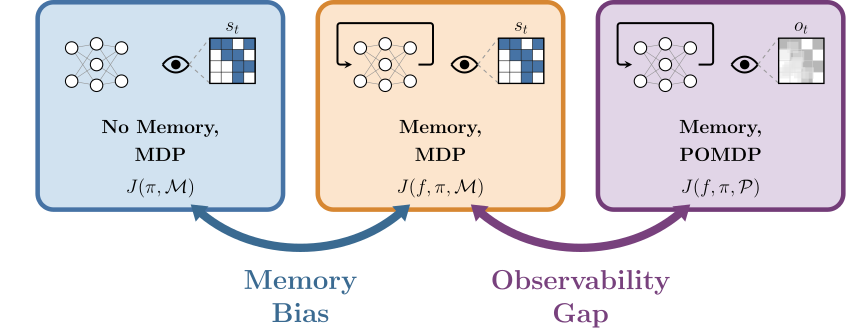
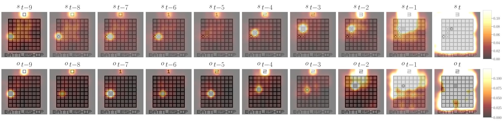
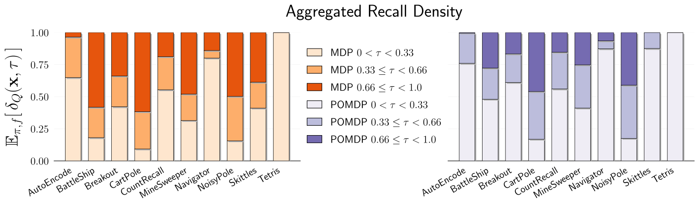
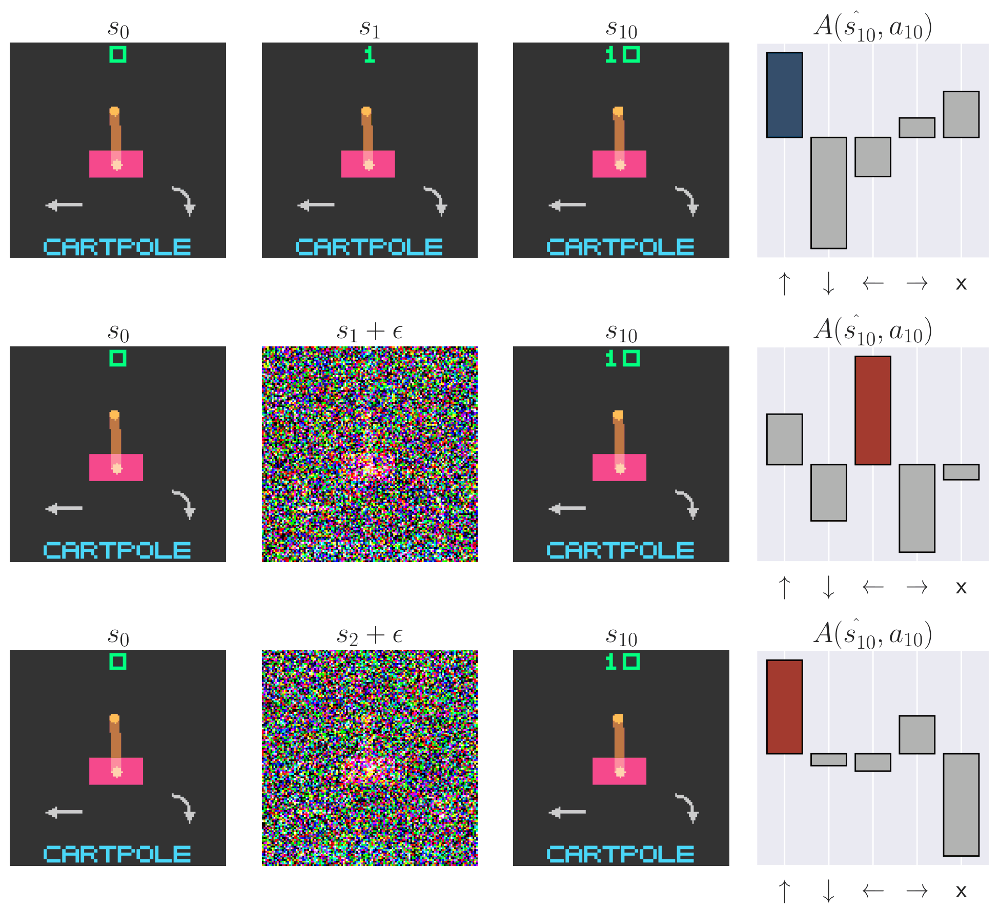
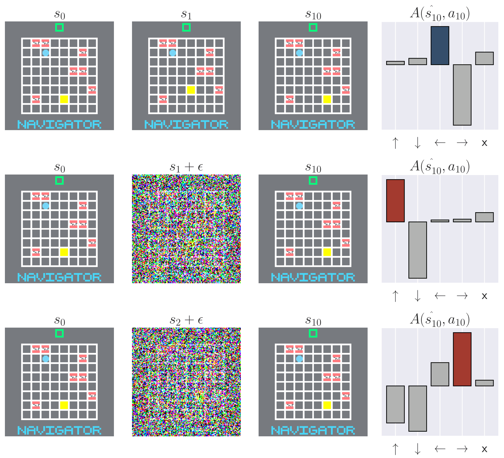
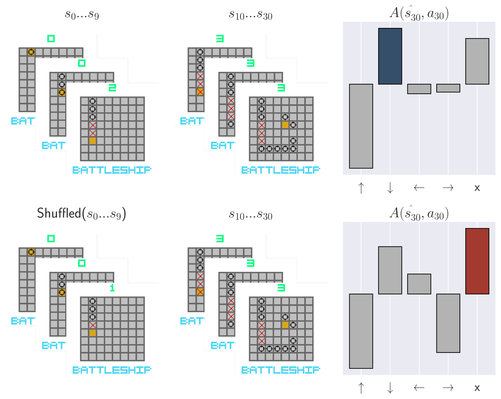
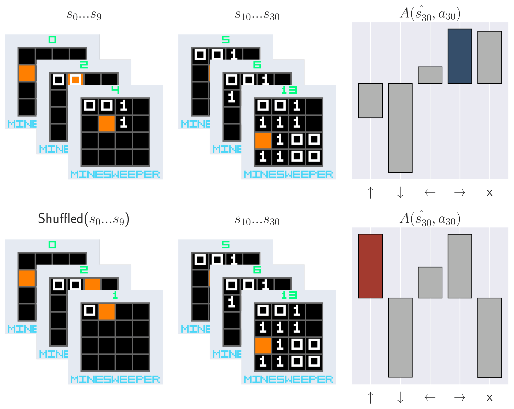
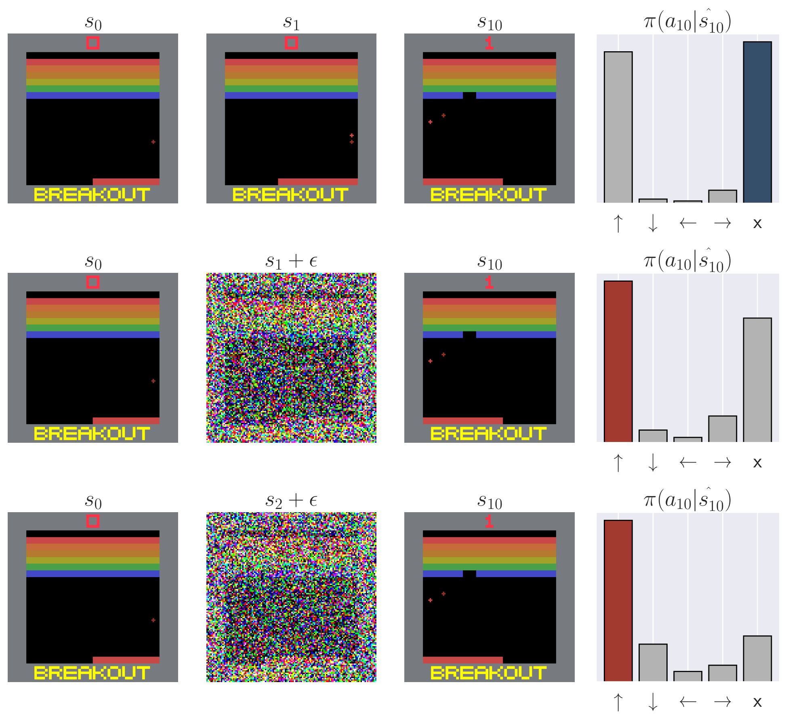
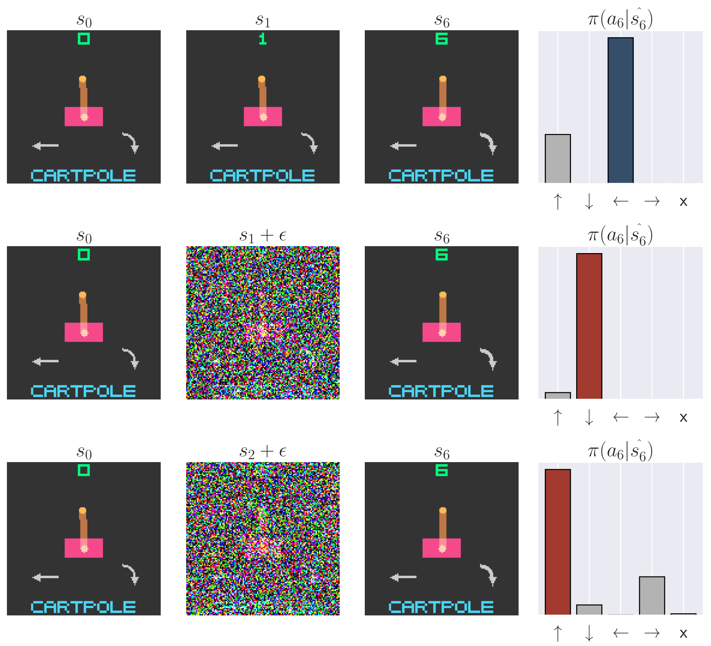

TL;DR: We study the effects of memory and partial observability in deep RL, proposing new tasks and metrics.
Abstract
How should we analyze memory in deep RL? We introduce tools for analyzing policies under partial observability and revealing how agents use memory to make decisions. To utilize these tools, we present POPGym Arcade, a collection of Atari-inspired, hardware-accelerated environments sharing a single observation and action space. Each environment provides fully and partially observable variants, enabling counterfactual studies on observability. We find that controlled studies are necessary for fair comparisons and identify a pathology where value functions smear credit over irrelevant history. Using this pathology, we demonstrate how out-of-distribution scenarios can contaminate memory, perturbing the policy far into the future.
Memory Evaluation Tools
The relationship between the Memory Bias and Observability Gap | Memory Bias detects hidden confounders introduced by memory model f , such as increased parameter count or optimization difficulty. Observability Gap quantifies how well memory mitigates partial observability. Combining said metrics with equivalent MDP/POMDPs $(\mathcal{M}, \mathcal{P})$, enables counterfactual studies of memory.

Disentangling the return with our memory analysis tools | We plot the POMDP returns ∈ [0, 1], the Observability Gap, and Memory Bias. We aggregate scores over all environments and difficulty configurations. Whiskers represent the 95% confidence interval over five seeds. Differences in Memory Bias between models suggests the return is a confounded metric for benchmarking memory.
Pixel Visualization |
We implement visualization tools to probe which pixels persist in memory via their impact on the policy.
More formally, given a trajectory $x_n$, we compute latent Markov states $\hat{s}_0$, $\hat{s}_1$, ..., $\hat{s}_n$.
Then, we backpropagate through memory and policy, taking the norm of the gradient of Q values with respect to an observation
$o_t$ where $t \le n$. We provide variants for bothQ learning and policy gradient methods
$$
\sum_{a_n \in A} \| \nabla_{o_t} Q(\hat{s}_n, a_n) \|_2^2 = \sum_{a_n \in A} \left\| \frac{\partial Q(\hat{s}_n, a_n)}{\partial \hat{s}_n} \frac{\partial \hat{s}_n}{\partial o_t} \right\|_2^2
$$
$$
\int_A \left\| \nabla_{o_t} \pi(a_n | \hat{s}_n) \right\|_2^2 da_n = \int_A \left\| \frac{\partial \pi(a_n | \hat{s}_n)}{\partial \hat{s}_n} \frac{\partial \hat{s}_n}{\partial o_t} \right\|_2^2 da_n.
$$
This measures how much each pixel from a prior observation $o_t$ propagates through memory and contributes to the Q values or action distribution at time $n$.
We experimented with other norms, but we find the $L_2$ norm provides the clearest pixel visualizations.

LRU saliency on the BattleShip task, using the L2 norm. The top row represents the MDP and the bottom row represents the equivalent POMDP.
Recall Density | We bin trajectories into thirds $\tau \in [0, 0.33), [0.33, 0.66), [0.66, 1.0)$, and plot the contribution of each bin on the $Q$ value via the recall density $\mathbb{E}_{\pi,f} [\delta_Q(x, \tau )]$. We aggregate across all memory models and random seeds. All density for MDPs should be in 0.66 $\leq$ $\tau$ $<$ 1.0, given the Markov property. I nstead, we see credit diffusely distributed across trajectories for all models and tasks, demonstrating the value smearing pathology.

POPGym Arcade
We require a benchmark that both provides MDP/POMDP twins with identical pixel-space states and observation spaces. To this end, we propose POPGym Arcade. Unlike Atari, our tasks utilize (1) stochastic initial states and transition functions (2) hardware acceleration (3) formal POMDP/MDP distinctions (4) known RML and (5) standardized returns to simplify comparisons.
A few of our MDP(Left)/POMDP(Right) twins, enabling counterfactual studies of memory.
POPGym Arcade is Fast
We implement POPGym Arcade purely in JAX, enabling parallelism for sample efficient RL. We achieve linear scaling up to $2^7$ parallel environments before saturating the compute units. Even with high dimensional pixel observations, POPGym Arcade achieves throughput approximately 10,000 times faster than the CPU-based Atari environments, and achieves similar throughput to hardware-accelerated Gymnax while generating observations four orders of magnitude larger.
Environment throughput | We compare the throughput of our environments to other well-known environments, using a GPU and CPU. We parallelize CPU environments using synchronous VectorEnvs, and shade the 95% bootstrapped confidence interval.
Memory Contamination
Naturally, we wonder what practical consequences arise from value smearing. Perhaps it induces robustness to Out of Distribution (OOD) scenarios. By distributing credit diffusely, a single OOD observation may impart little impact on the policy. To test this hypothesis, we first collect trajectories following learned policies. Then, we perturb these collected trajectories and analyze how the relative (mean-centered) Q values $A(s, a) = Q(s, a) - |A|^{-1} \sum_{a' \in A} Q(s, a')$ and policy change. We measure the impact of (1) adding noise to a single frame in each trajectory, and (2) shuffling the first few observations in each trajectory. Observation noise is a common problem in POMDPs, but it is unclear whether the memory module or CNN is responsible for any robustness or sensitivity. By shuffling the beginning of the trajectory, any observed effects will be caused purely by memory. We find that memory-endowed agents are not robust and they do not smooth over OOD observations. Even a single OOD observation can be disastrous for the policy. This is especially worrisome for recurrent models, where the OOD observation can persist in the recurrent state, contaminating it and perturbing the policy far into the future. We see similar effects even when we permute the trajectory, removing possible CNN confounders. Our results demonstrate large sensitivity to both OOD observations and trajectories. This is especially concerning for applications where OOD scenarios are expected, such as when applying RL to the real world or using offline RL.


Recurrent state contamination | We inject varying amounts of noise into one past observation, demonstrating perturbations in relative $Q$ values ($A$) and the greedy action for the LRU-based policy.


Confounder-free recurrent state contamination | We shuffle the beginning of each trajectory to remove any CNN confounders. Even in-distribution observations can contaminate the recurrent state when the trajectory is OOD. The BattleShip and MineSweeper examples demonstrating this effect even for nonrecurrent memory models.


Recurrent state contamination | We demonstrate that injecting a noise frame early in an episode causes a change in the policy distribution $\pi(a|s)$ in PPO with GRU(left) and PPO with LRU(right). The same phenomenon persists across different memory-based baselines and algorithms.
See our paper for further experiments.
Create a POPGym Arcade Twin Yourself
Implement a JAX environment and a render function to toggle observability. We supply drawing utilities for GPU pixel rendering.
import jax
import jax.numpy as jnp
from gymnax.environments import environment
from popgym_arcade.environments.draw_utils import draw_rectangle, draw_hexagon
class MyTwinEnv(environment.Environment):
def __init__(self, partial_obs=False, obs_size=128):
super().__init__()
self.partial_obs = partial_obs
self.obs_size = obs_size
def reset_env(self, key, params):
state = EnvState(pos=..., timestep=0)
return self.render(state), state
def step_env(self, key, state, action, params):
# Transition dynamics
new_state = state.replace(pos=..., timestep=state.timestep + 1)
return self.render(new_state), new_state, reward, done, info
def render(self, state):
# Initialize canvas with your favorite color
canvas = jnp.full((self.obs_size, self.obs_size, 3), bg_clr)
def draw_full(canvas):
# MDP
return draw_rectangle(canvas, ...)
def draw_partial(canvas):
# POMDP
return draw_hexagon(canvas, ...)
# First timestep (t=0) is always the MDP observation
return jax.lax.cond(
jnp.logical_or(state.timestep == 0, not self.partial_obs),
draw_full, draw_partial
)References
Lange, R. T. gymnax: A JAX-based Reinforcement Learning Environment Library, 2022. URL http://github.com/RobertTLange/gymnax.